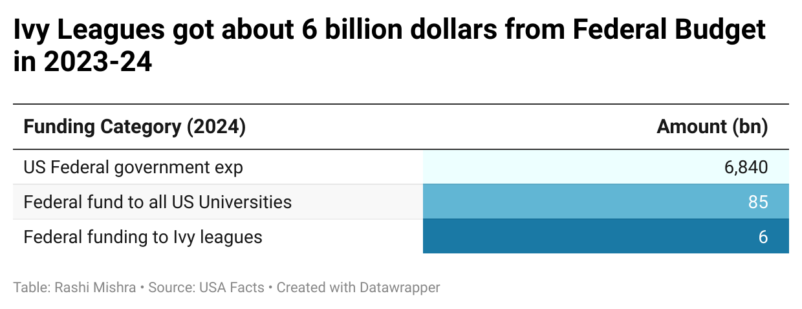
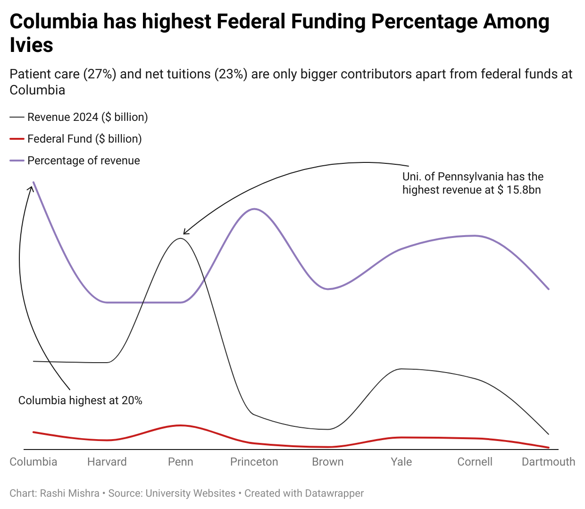

Visualising Federal Cuts on Ivy Leagues: Why do they matter?
Trump administration has threatened the US Universities to freeze more than $12 billions.
The Ivy League Universities are the most affected by this. The funding cuts are expected to affect the
students and the universities in a big way.
Various American universities, particularly Ivy League institutions, have faced threats of federal funding cuts from the Trump administration since March 2025. These threats are based on allegations that universities failed to protect against "civil rights violations" and tolerated "anti-semitism" on their campuses. Six of the eight Ivy League universities have already seen significant federal cuts planned.
This situation has created anxiety within these institutions about managing budgets and funding ongoing research projects. It also impacts the fundamental character of these universities, which have historically been centers for academic freedom, innovation, and the cultivation of diverse thoughts and ideologies.
The potential consequences extend beyond the universities themselves, as America's scientific and medical research capabilities are deeply connected with its university system. This relationship has been part of a national compact that began after World War II to develop expertise and knowledge for the country's benefit.
Portion of the Federal Budget
Out of the approximately $6.8 trillion in total federal spending for fiscal year 2023-2024, the U.S. federal government spent roughly $85 billion directly on universities. This represents about 1.25% of total federal spending.

The largest portion of this funding was allocated to research activities, with medical and STEM fields receiving the highest levels of support. This doesn't include indirect benefits to universities from federal student loan programs where payments go directly to students and not the institutions
According to USA Facts, More than $6 billion is spent on the eight Ivy Leagues out of this total federal funds to the universities. These institutions form 8% of such funding and only 0.5 % of the total American universities.
Federal funding to Ivies and their operating revenues
Columbia University received about $1.3 billions of federal funds in the fiscal year 2023-24. This is the highest proportion of the operating revenue among all the ivies. The university is highly dependent on the funds that it gets as part of patient care and net tuition fees. In March 2025, the Trump administration threatened the university with a cut of $400 million if it does not overhaul its protest policies, security practices and Middle Eastern, South Asian and African studies department.

In 2024, a total of US $ 189,346 were paid by the city government departments. This sum was just US $ 136,405 in 2014. This is despite the fact that over the years, especially during Eric Adam’s mayorship, there was an increase in waivership by the board. According to a news report by NBC New York, dated November 2024, “........an average of 748 employees per year have received authorization to own or work for private entities that transact with the city under Mayor Adams. That represents an 61% increase over the de Blasio administration, and a 219% increase from the average number of waivers issued during the Bloomberg and Giuliani administrations”.
According to the same report, Mayor Adams attributed the increasing number of waiver requests to a highly competitive job market in which municipal employees want freedom to earn extra income.
“If individuals need a waiver that I have to approve - and then it is approved by the oversight agencies to make sure it’s done correctly,” Adams said, “then I have to do that to attract the talent that I need to run the city.”